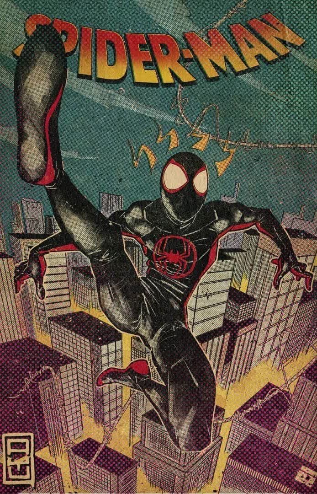
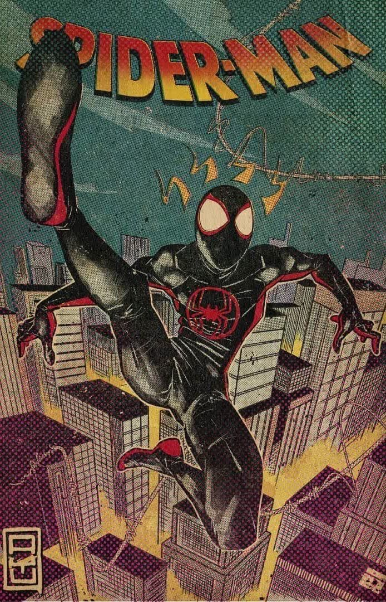

Spider-Man

No universo em que se passa o filme Homem-Aranha no Aranhaverso, Miles Morales é um adolescente do Brooklyn que é picado por uma aranha radioativa e assume o lugar do Homem-Aranha após a morte de Peter Parker. Mais tarde no filme, Miles conhece uma outra versão alternativa de Peter Parker, que vive em outro planeta Terra e é consideravelmente mais velho do que era o que ele conhecia. Os dois estabelecem uma ligação de amizade muito forte.
Os pais de Miles Morales são dois personagens importantes em Homem-Aranha no Aranhaverso. O pai é Jefferson Davis, um agente da polícia. Enquanto a mãe, Rio Morales, trabalha num hospital. Miles também tem uma ótima relação com o seu tio Aaron Davis.
Dentro dos vários universos apresentados no filme, há muitos personagens que têm uma história semelhante à do Homem-Aranha – ao menos em um ponto.Todos foram picados por uma aranha radioativa. No caso de Gwen Stacy, ela é apresentada como a "primeira e única Mulher-Aranha". Tal como o Peter Parker alternativo que Miles Morales conhece, também ela viajou involuntariamente pelo multiverso. Outros exemplares curiosos de Homem-Aranha que também se encontram com o protagonista são o Homem-Aranha Noir, o Presunto-Aranha e Peni Parker.
O filme de animação disponível no Disney+ também tem outros personagens clássicos das histórias do super-herói aracnídeo que todos os fãs do Homem-Aranha reconhecerão. São eles a querida Tia May e a Mary Jane, ambas com um papel importante na história.
| Nome | Valor | Data de lançamento |
|---|---|---|
| Spider-Man: Miles Morales | R$ 29,17 | 2011 |
| Ultimate Comics Spider-Man, Vol. 1 | R$ 369,69 | 2012 |
| miles morales ultimate comics spider-man - volume 3 | 106,70 | 2015 |
.jpg)
.jpg)
.jpg) 
